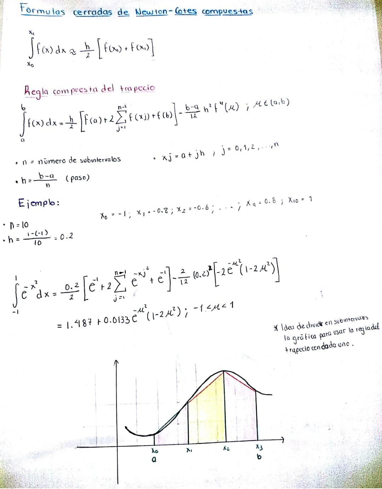
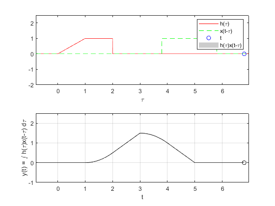

Practica 4. Convolución y Correlación de señales en tiempo continuo
RPL04
Contents
Integrantes
- Garduño Sandoval Susana Itzel
- Villavicencio Castillo Rodrigo Adrian
- Vargas Martinez Javier
Objetivos
- Conocer métodos básicos de integración numérica
- Manipulación de instrucciones en MATLAB
- Simular convoluciones y correlaciones de señales continuas
Introducción
Como introducción elabore un reporte de los métodos descritos en la lista de reproducción que incluya el desarrollo de los ejemplos expuestos.

Nota
Se realizo un cambio al archivo convconm convirtiendola en convGrl. Es en convGral donde se trato de hacerlo más general, haciendo que la gráfica se acomodara automaticamente en lo largo (encontrando en donde iba a existir la convolución) y en la altura (determinando los puntos más grandes que de la convolución)
function convGral(x,h) figure % Se crea una figura para hacer las gráficas c=Comienza(x,h); f=Finaliza(x,h); dtau = 0.005; % Base de los rectangulos para realizar la integral tau = (c-2):dtau:(f+2); % Intervalo de visualización del resultado ti = 0; % Indice para el vector de resultados pv=PrimerValor(h); longitudFuncion=PrimerValor(h)-UltimoValor(h); longitudFuncion=abs(longitudFuncion); uv=UltimoValor(h); tvec = (pv-3):.1:(uv+longitudFuncion+3); % traslaciones de t, cuantas integrales se calulan y = NaN*zeros(1, length (tvec)); % Resultados de acuerdo a cuantos t limSup = 2.5; %Para mover la grafica limInf = -1.0; for t = tvec, % Cantidad de traslaciones ti = ti+1; % Indice para guardar el resultado (indice del tiempo) xh = x(t-tau).*h(tau); % resultado de la multiplicación lxh = length(xh); % longitud del resultado y(ti) = sum(xh.*dtau); % Base por altura, aproximación de la integral subplot (2,1,1), % gráfica de 2 x 1 (primera) plot(tau, h(tau), 'r-', tau, x(t-tau), 'g--', t, 0, 'ob'); %graficas %disp(y(ti)); axis ([tau(1) tau(end) -2.0 2.5]); % límites de los ejes patch([tau(1:end-1); tau(1:end-1); tau(2:end); tau(2:end)],... [zeros(1,lxh-1);xh(1:end-1);xh(2:end);zeros(1,lxh-1)],... [.8 .8 .8], 'edgecolor', 'none'); xlabel('\tau'); % Texto del eje X legend('h(\tau)', 'x(t-\tau)','t','h(\tau)x(t-\tau)')% Caja de Texto subplot (2, 1, 2) % gráfica de 2 x 1 (segunda) plot (tvec, y, 'k', tvec (ti), y(ti), 'ok'); xlabel ('t'); ylabel ('y(t) = \int h(\tau)x(t-\tau) d\tau'); if(y(ti) > limSup) limSup = y(ti); end if(y(ti) < limInf) limInf = y(ti); end axis ([tau(1) tau(end) limInf limSup]); % límites del eje grid; % malla drawnow; % efecto de movimiento continuo end end
El archivo anterior utliza los siguientes archivos
function [j] = UltimoValor(x) for i=1000:-0.01:-1000 if(x(i) ~= 0) %disp(i); j=i; break; end end end
Archivo UltimoValor
function [j] = PrimerValor(x) for i=-1000:0.1:1000 if(x(i) ~= 0) %disp(i); j=i; break; end end end
Archivo PrimerValor
function [c] = Finaliza(x,h) c = UltimoValor(h) + UltimoValor(x); disp(c); end
Archivo Finaliza
function [c] = Comienza(x,h) c = PrimerValor(h) + PrimerValor(x); disp(c); end
Archivo Comienza
PR04. Ejercicio 1.


Grafica con la función convolución
figure x = @(t) (t>0 & t<1); k = x(linspace(-2,2)); plot(linspace(-2,2), k); figure h = @(t) (-t+1).*(t>0 & t<1) + (t-1).*(t>1 & t<2); m = h(linspace(-1,3)); plot(linspace(-1,3), m); convGral(x,h);
0.2000
2.9800
Grafica con piecewise

PR04. Ejercicio 3.
Grafica con la función convolución
figure x = @(t) (t>1 & t<3); k = x(linspace(-1,4)); plot(linspace(-1,4), k); figure h = @(t) (t).*(t>0 & t<=1) + (t>1 & t<2); m = linspace(-1,3); plot(m, h(m)); convGral(x,h);
1.2000
4.9800

Gráfica con piecewise

PR06. Ejercicio E.
Autocorrelacion de la siguiente señal
x =@(t) (t>0 & t<3) - (t>=3 & t<4); h = @(t) -(t>=-4 & t<-3) + (t>=-3 & t<=0); %Para graficar m = linspace(-1, 5); figure plot(m, x(m)); k = linspace(-5, 1); figure plot(k, h(k)); % Gráfica con la función convolución convGral(x,h);
-3.9000
3.9900
Gráfica con piecewise

PR06. Ejercicio F.
Correlacion de la siguiente señal
%<<ej42.PNG>> x1 =@(t) (t>0 & t<3) - (t>=3 & t<4); x0 = @(t) (t>=0 & t<2) - (t>=2& t<=4); x0_prima = @(t) -(t>=-4 & t<-2) + (t>=-2& t<=0); %Para graficar g = linspace(-1, 5); figure plot(g, x1(g)); w = linspace(-4, 5); figure plot(w, x0(w)); d = linspace(-5, 1); figure plot(d, x0_prima(d)); % Gráfica con la función convolución convGral(x1,x0_prima);
-3.9000
3.9900

Gráfica con piecewise